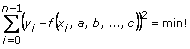

Study the mathematics examples to learn some of the possible theoretical and practical applications of the Mathematics VIs. These examples are located in labview\examples\math and are grouped into the following LLBs:
Also, many of the Mathematics VIs have example text on the front panel of the VI showing how to input various parameters. Double-click the VI icon to open the front panel of the VI and view the text.
The following examples provide possible applications for the Mathematics VIs. In many applications, being able to enter formulas directly on the front panel is extremely useful. This is possible using the Formula Parsing VIs. The first two examples below describe some typical scenarios where you might use the Formula Parsing VIs.
Given a set of measurements (xi, yi) where i = 0, 1, …, n – 1 fit the set of data points into a model equation, such as the following.
Y = asin(bX) + ccos(dX)
or
Y = a + bX + cexp(dX)
or more generally
Y = f(X, a, b, …, c)
(where a, b, …, c are the unknown model parameters)
LabVIEW can calculate such optimal system parameters as

LabVIEW uses the Levenberg Marquardt method to solve this minimization problem. Before now, the model equation had to be fixed in the Formula Node before running the program. With the Formula Parsing VIs, you can input the model equation on the front panel.
Another typical example consists of the following three-step process.
(xi, yi, zi)
for i = 0, 1, …, n – 1(xi, yi, zi)
for i = 0, 1, …, n – 1z = f(x, y, a, b, …, c) = 0
z = f(x, y, a, b, …, c) = max!
z = f(x, y, a, b, …, c) = min!
An easy way to input discrete measurements on a LabVIEW front panel makes calculating the roots, minima, and maxima for a general model simple for your end user. Notice that at the beginning of the previous process, the correct formula Z = f(X, Y, a, b, …, c) is not known.
Another application for the Mathematics VIs is to help control an x-y step motor or a robot control that positions objects in 2D or 3D space during run time. The path of the object can be calculated with these VIs.
Another 2D and 3D application of the Mathematics VIs is for surface description. Wings of airplanes, among other parts of machines and instruments in the real technical world, can be described by mathematical curves and surfaces. In nondestructive testing, such as using ultrasound, eddy currents, or X-rays, a pre-scan of the structure under test is initially done and followed by a more accurate scan in areas where the measured and expected values differ.
Taking a set of coarse measurements as a preparatory step is necessary because it is virtually impossible to store the measurements of all the curves and surfaces of an entire structure. The pre-scan of the wing of a plane is then followed by a more accurate scan of a smaller part of this wing. Because the Formula Parsing VIs can handle formulas on the front panel, you can use them to calculate the 2D and 3D curves of the wing in an effective manner.
The study of solutions of differential equations, especially parameter studies, is not only a question of appropriate numeric algorithms such as the Euler method, Runge Kutta method, or the Cash Karp method, but also a question of formula manipulation. With the Mathematics VIs you can manipulate differential equations on the front panel. Refer to the labview\examples\Mathematics for examples of this approach to solving differential equations.